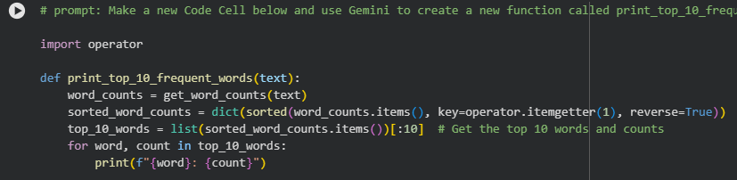

Book Analysis with Python
About The Project
this project involves using python to analyse the text from Animal Farm by George Orwell. The analysis proritized counting word frequencies, and based on htere importantse in the book. The project utilized various python libraries such as NLTK and Matplotlib to process the text data and visualize the results. The goal of the project was to gain insights into the themes and motifs present in the book through quantitative analysis.
Sample Code
Below is a sample of the code used to create the turtle drawings in this project.

Project Image

Analysis
This was the reasult of my analysis. i found the top 15 most frequent meaningful words in Animal Farm. I used this information to infer what plot points were important to pay attention to and whcih charecters would be leading the story.
Conclusion
This project provided valuable insights into the themes and motifs present in Animal Farm. By analyzing the text data, we were able to identify key plot points and charecters that drive the story forward. Overall, this project highlights the power of data analysis in understanding complex literary works.